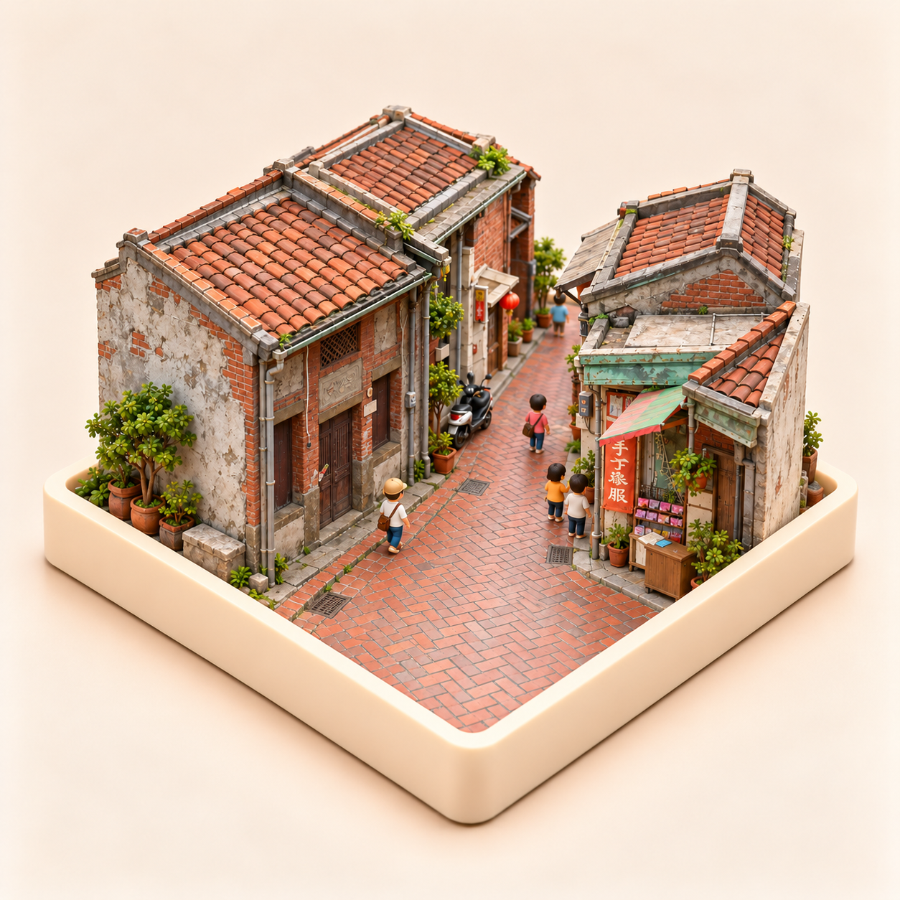
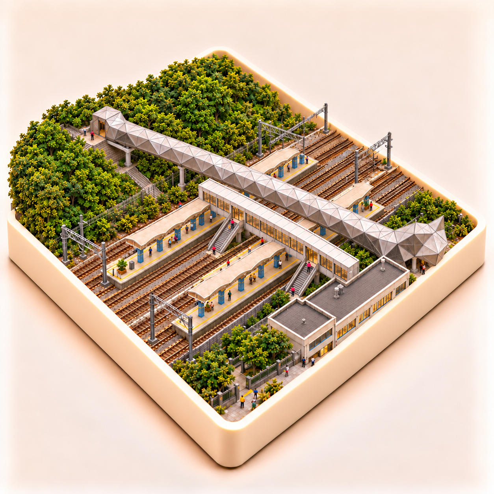
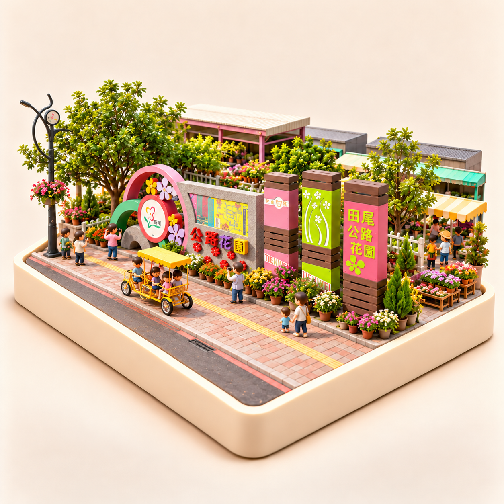

鹿港老街
review-v5.png · 已通過
本輪使用者已通過，保留原圖。
開啟實景比較猴硐更新；和平島 v10 為待修候選，尚未精確對齊，比較頁暫留 v7。鹿港、田尾、六十石山已通過，保留原圖。App 圖片未套用。
士林夜市先前已更新至 v7：調整劍潭站與表演藝術中心之間的道路及入口關係；本輪未重新出圖。查看士林夜市 v7。

本輪使用者已通過，保留原圖。
開啟實景比較
貓橋與矩形旅客通道拆成兩座分離的平行跨軌天橋；保留兩座島式月台與下接樓梯。結構按實照與衛星圖核對，精確尺寸及現況細部仍為微縮簡化。
開啟實景比較
本輪使用者已通過，保留原圖。
開啟實景比較已修正橋面軸向，較舊稿接近底座邊線；但直線段仍未精確平行，三次嘗試後仍未通過幾何自檢。比較頁保留 v7，本頁展示 v10 候選稿，未當成定稿。
開啟實景比較本輪使用者已通過，保留原圖。
開啟實景比較